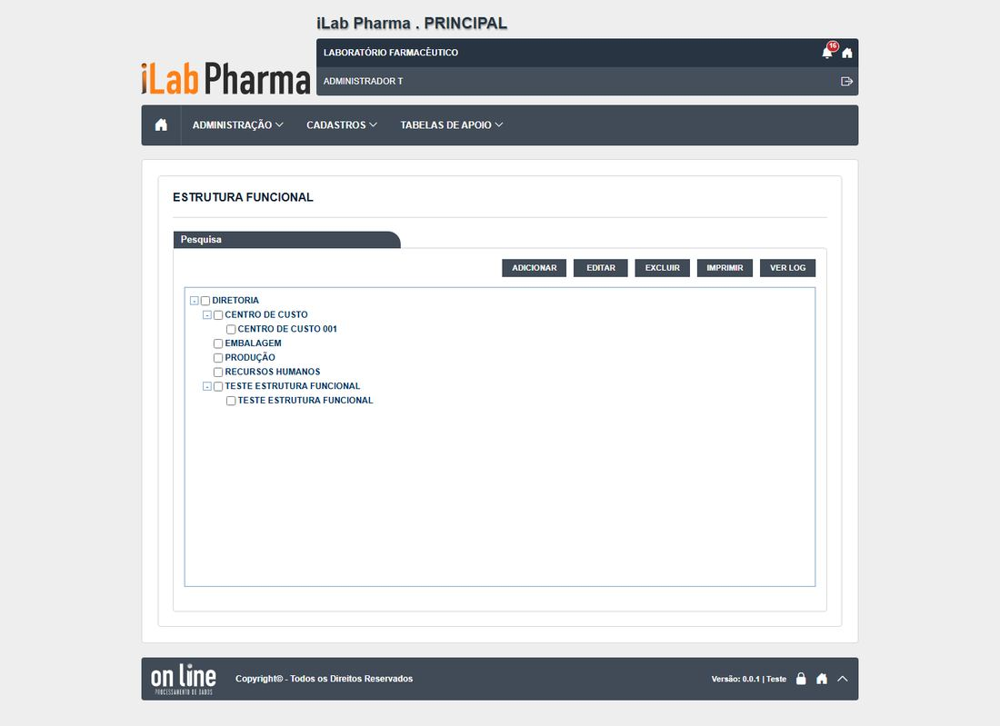
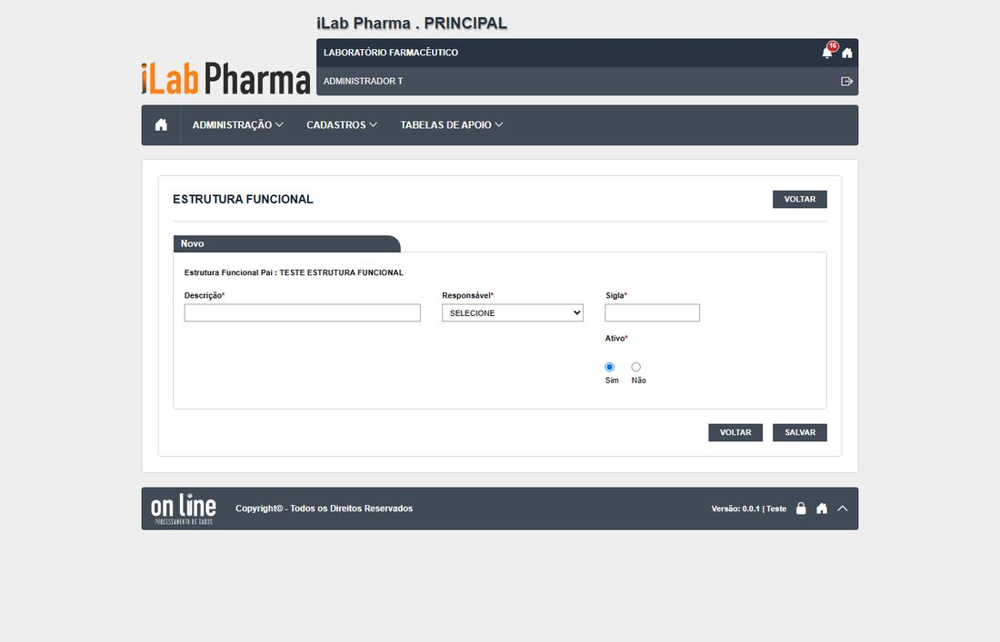

Menu: Cadastros · Situação na versão nova: Testada · Endereço: /administrativas/locais · Tela equivalente no legado: administrativas/local_lst, _ed, _rel (no código se chama "Local") (Não testada no legado)
Em uma olhada
| Casos executados | Igual | Regressão | Melhoria | Novo | Bloqueado | Defeitos listados |
|---|---|---|---|---|---|---|
| 9 | 8 | 0 | 0 | 1 | 0 | 3 |
Classes: Igual (mesmo comportamento do sistema entregue, inclusive a falha), Regressão (piorou), Melhoria (falhava e agora funciona), Novo (o sistema entregue não tinha resultado) e Bloqueado (não deu para executar).
O que a tela faz
Árvore da estrutura da empresa (locais, áreas e setores), cada um com nome, responsável e sigla. É usada pelos ambientes e por outras telas.
- A tela é uma árvore com os botões ADICIONAR, EDITAR, EXCLUIR, IMPRIMIR e VER LOG sobre o item marcado. Não tem campo de pesquisa.
- Obrigatórios: Local (até 100 caracteres), Responsável e sigla (até 5). Sigla repetida: "Ja existe outra estrutura com a sigla informada!".
- Alterar não pede justificativa (como no legado). Inativar grava, mas o local inativo continua na árvore e aceita um filho sob ele.
- Excluir pede só a confirmação, sem justificativa; o item some e o histórico dele deixa de existir (404).
- Excluir local com filhos é recusado: "Existem Estruturas Funcionais filhas desta."
- Excel e Imprimir geram arquivo.
Como a tela é


Resultado dos testes
| Caso | Cenário | Legado | Versão nova (o que a tela mostrou) | Classe | Defeito |
|---|---|---|---|---|---|
| RG-PRI-040 | Incluir e campos obrigatórios | sem caso | Mensagens por campo; pede confirmação; sigla repetida recusada | Igual | N-003 |
| RG-PRI-041 | Limites e formatos | sem caso | Local corta em 100; sigla em 5 | Igual | — |
| RG-PRI-042 | Alterar com justificativa e histórico | sem caso | Alterar não pede justificativa | Igual | — |
| RG-PRI-043 | Inativar | sem caso | O inativo continua na árvore; aceitou criar filho sob local inativo | Igual | — |
| RG-PRI-044 | Excluir | sem caso | Sem justificativa; histórico do excluído some | Igual | DV-PRI-N-007 |
| RG-PRI-045 | Excluir com dependentes | sem caso | Com filhos: recusado. Local usado por usuário: não testável | Novo | — |
| RG-PRI-047 | Excel e Imprimir | sem caso | Baixa .xlsx (200) e gera PDF (200) | Igual | — |
| RG-PRI-048 | Histórico | sem caso | Inclusão, alteração e inativação, sem justificativa; textos sem acento | Igual | N-002 |
| RG-PRI-049 | Hora do histórico | sem caso | É a hora do servidor | Igual | — |
Evidências (capturas): RG-PRI-040 a 049 (rodada 1). As capturas ficam na pasta evidencias/ de cada rodada.
Defeitos e pontos de atenção
| Defeito | Gravidade | O que acontece |
|---|---|---|
| DV-PRI-N-007 | Alta | Local e Centro de custo são excluídos sem justificativa e o histórico do excluído deixa de existir. Persiste (DV-PRI-009). |
| DV-PRI-N-003 | Média | Mensagens de erro da API somem em cerca de 1 segundo e vêm sem acento. |
| DV-PRI-N-002 | Baixa | Textos do histórico sem acento ("INCLUSAO", "NAO"). |
Para quem desenvolve
- Exigir justificativa ao excluir e manter o histórico do excluído (N-007; RF-PRI-042).
- Impedir criar filho sob local inativo, ou tirar o inativo da árvore.
- Exibir o texto do histórico com acento.
Para quem testa (QA)
- A sigla de teste tem até 5 caracteres (
T.001). Registros criados: ids 14 e 15, já excluídos. O pai de teste é "TESTE ESTRUTURA FUNCIONAL".
Para a gestão
- Base de várias telas (ambientes, responsáveis). A exclusão sem motivo e sem histórico fere a rastreabilidade (ALCOA+).
O passo a passo para homologar esta tela está na página seguinte.